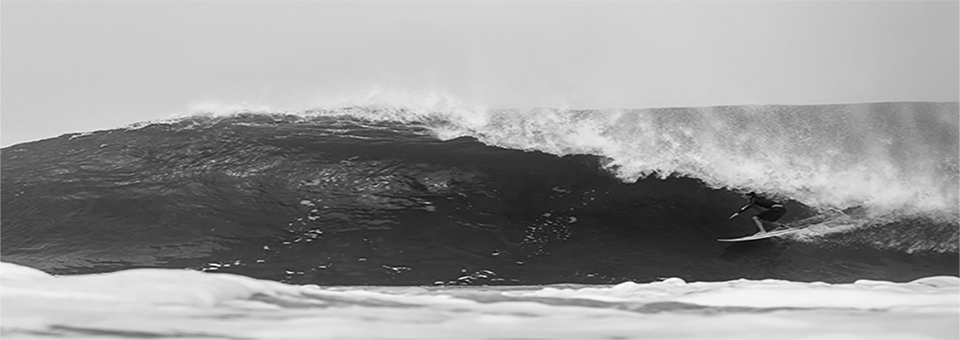

Check out this sleek Rusty shooting a tube.
6'0 Rusty Dozer
Rusty took the performance shortboard rocker and relaxed the ends a bit to enhance paddle and glide through flat spots, and put a moderate-volume, high-performance rail with a little extra foam to the deck side of the apex. It is a free and forgiving rail yet still easy to set into turns. The chine towards the tail reduces the width and provides a little extra squirt out of turns. Slight single concave through the majority of the board generates the speed, with some off of the tail to keep the board loose and responsive.
Walking the line between a fishy slab and a performance short board, the Dozer packs about as much volume as possible into the traditional shortie outline, with a couple unique tweaks that keep it lively.